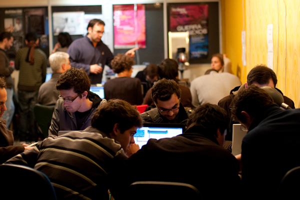
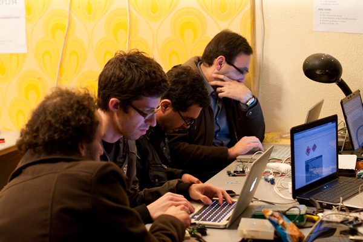
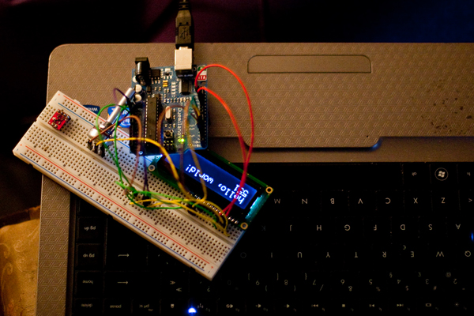
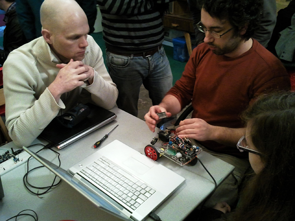
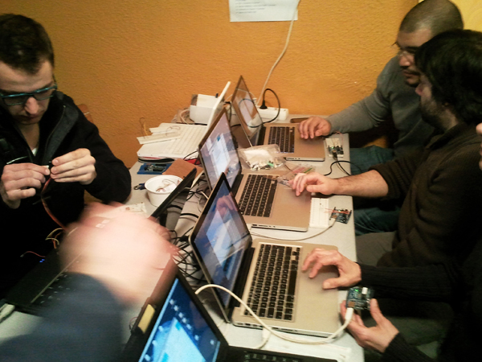
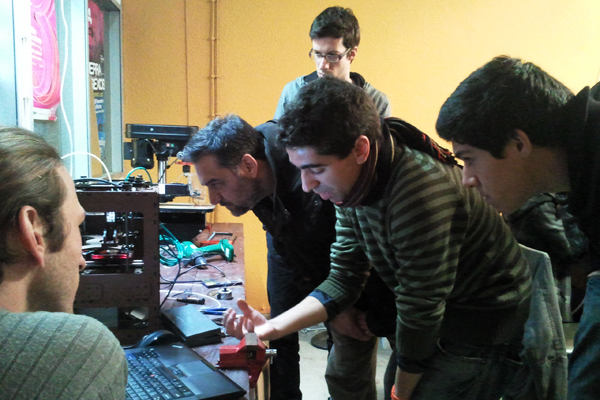
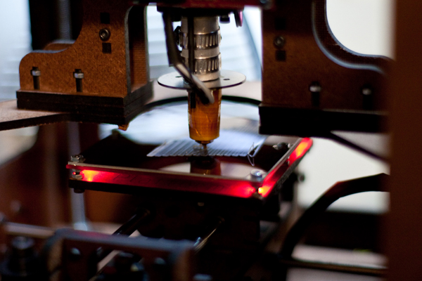
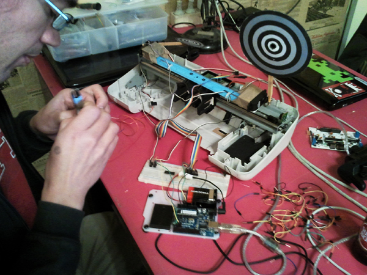
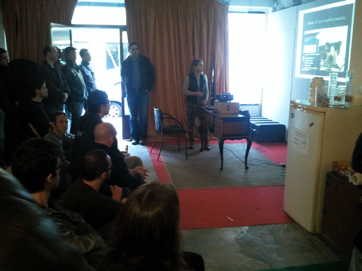
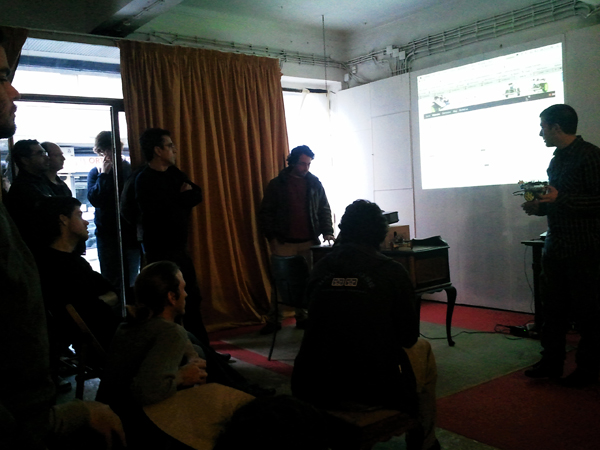

[PT]No último sábado, 5 de Fevereiro, o altlab organizou o Arduino Hack Day.
Participaram no evento perto de 40 pessoas, entre entusiastas em electrónica, artistas, programadores, arquitectos, fotógrafos, amigos.
[EN]On Feb 5th altlab held its first Arduino Hack Day. Around 40 enthusiasts, artists, programmers, architects, photographers and friends participated in the event.

[PT]Para muitos, foi o primeiro contacto com o Arduino, a descoberta da simplicidade desta plataforma para o desenvolvimento de projectos de computação física.
Distribuídos por quatro bancadas, os participantes começaram a experimentar assim que chegaram!
[EN]For many this was their first contact with the Arduino, discovering the ease with which this platform can be used for the development of physical computing projects.
Assembled around workbenches, participants started experimenting as soon as they arrived!
 
[PT]Uma das bancadas, dedicada ao tema Arduino, motores e a robótica, ficou por conta do Guilherme Martins (Guibot). Noutra bancada, alguns principiantes aprendiam a dar os primeiros passos, com a ajuda de membros do altlab.
[EN]One of the tables, dedicated to Arduino, motors and robotics, was run by Guilherme Martins (Guibot). Near by, at another table, some participants took their first steps with the help of altlab members.
 
[PT]Enquanto isso, a impressora 3D (“makerbot”) trazida pelo nosso convidado neozelandês, Tiago, ia imprimindo as primeiras peças.
[EN]All the while, the MakerBot brought by our New Zeleand guest Tiago, was printing some plastic parts for the projects.
 
[PT]O Pedro Ângelo, do LCDLab, veio do Porto para nos ajudar e ressuscitou um projecto antigo do Maurício, que depois de pronto gerou alguma diversão…
[EN]O Pedro Ângelo, from LCDLab, came from Porto to help out and decided to bring back to life an old project of Maurício’s which immediately turned into a lot of fun.…

[PT]Logo depois do almoço começaram as apresentações. A Mónica Mendes e o Maurício Martins deram a conhecer o colectivo altlab, o seu passado, presente e futuro. A Cheng Xu, também nossa convidada, apresentou-nos o Seeeduino Film. Por fim, o Guibot e o André, da Artica, falaram do Motoruino e do Farrusco.
[EN]After lunch we had some presentations. Mónica Mendes and Maurício Martins talked about the past, present and future of altlab. Our guest Cheng Xu presented the Seeduino film. Finally, Guibot and André from Artica talked about the Motoruino and Farrusco.
 
[PT]Passadas 10 horas de puro hacking e muita cerveja, o Arduino Hack Day chegava ao fim, todos os participantes muito satisfeitos com a experiência. O altlab conseguiu concretizar o principal objectivo desta iniciativa: juntar pessoas interessadas em partilhar conhecimentos sobre o Arduino, ajudar quem nunca tinha desenvolvido nada com a plataforma e conquistar novos interessados em pertencer a este colectivo fantástico!
[EN]After 10 hours of pure hacking and lots of beer, the Arduino Hack Day came to an end, and everyone left with a smile on their faces. We were able to attain the main goals for this event: gather people interested in sharing knowledge about the Arduino, help those who had never used the platform, and have several new members join our beloved collective.
[PT]Por último, fica aqui um agradecimento muito especial aos membros do altlab que contribuíram na organização deste evento:
[EN]Finally, a word of special thanks to the altlab members who contributed to making the Arduino Hack Day possible:
Andre Almeida, Ferdi Meier, Guilherme Martins, Leonardo Marques, Manuel Alves, Mauricio Martins, Mónica Mendes, Nuno João, Paulo Rodrigues e Pedro Ângelo (LCD).
Some photos by João Nogueira e Rita Carvalho.
Flickr Photo Set: http://tinyurl.com/6f7vhsx
English version soon!
{kind=link}
{kind=link}
{kind=link}
{kind=link}
{kind=link}
{kind=link}
{kind=link}
{kind=link}
{kind=link}
{kind=link}
{kind=link}
{kind=link}
{kind=link}
{kind=link}
{kind=link}